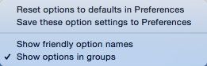
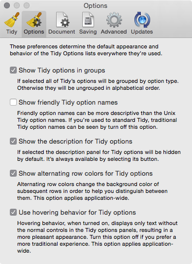

Change the Appearance of Tidy Options
Balthisar Tidy lets you choose several options to help you balance its beautiful appearance with your productivity. Follow this series of steps to discover some ways you can change the appearance of the Tidy Options panel.
-
You can choose Show friendly option names and choose Show options in groups using the menu at the bottom of the Tidy Options panel.  Choosing these options affects only the current window.
-
You can choose default behaviour for new windows in Preferences. In addition to the options above, Preferences gives you control over the hover effect used in the Tidy Options list, the row appearance, and more. 